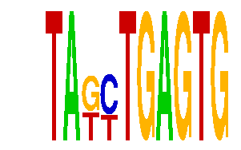

family_12 |
|---|
|  |
| Download PWM |
| Download instances (motifs) |
| Show motif distribution |
Query_ID | Query_Consensus | Subject_Name | Source_DB | Subject_ID | Length | Orientation | Offset | Divergence | Overlap | Subject_Consensus |
|---|---|---|---|---|---|---|---|---|---|---|
| family_12 | TAGCTGAGTG | Nkx2-5 | JASPAR | MA0503.1 | 11 | reverse-complement | 2 | 0.822 | 8 | ARCCACTCAAG |
Sequence | Start_position (from start) | Start_position (from end) | Average conservation | Best conservation score | Instance_with_best_CS | Best_Z-score | Instance_with_best_ZS | Strand |
|---|---|---|---|---|---|---|---|---|
| chr1:51161235-51162235 | 979 | 989 | 0.0072 | 0.027 | TAKYTGAGTG | 17.377302 | TAKYTGAGTG | 1 |
| chr9:24554457-24556500 | 502 | 512 | 0.0003 | 0.001 | TAKYTGAGTG | 12.745697 | TAKCYGAGTG | 1 |
| chr2:148452400-148453693 | 13 | 23 | 0.008 | 0.013 | TAKCTGAGTG | 12.745697 | TAKCKGAGTG | 1 |
| chr11:30126413-30127500 | 43 | 53 | 0.0118 | 0.024 | TAKCYGAGTG | 17.377302 | TAKYTGAGTG | 1 |
| chr17:69544800-69546800 | 717 | 727 | 0.0033 | 0.008 | TAKYTGAGTG | 17.377302 | TAKYTGAGTG | -1 |
| chr17:27000900-27002800 | 756 | 766 | 0.4009 | 0.691 | TAKYTGAGTG | 17.377302 | TAKYTGAGTG | 1 |
| chr10:7007500-7009900 | 2314 | 2324 | 0.1879 | 0.502 | TAKYTGAGTG | 17.377302 | TAKYTGAGTG | 1 |
| chr2:90969400-90973057 | 1778 | 1788 | 0.0024 | 0.006 | TAKCYGAGTG | 12.745697 | TAKCTGAGTG | -1 |
| chr8:90862114-90863600 | 313 | 323 | 0.0106 | 0.045 | TAKCKGAGTG | 12.745697 | TAKCTGAGTG | 1 |
| chr18:11062200-11063284 | 602 | 612 | 0.0056 | 0.016 | TAKYTGAGTG | 17.377302 | TAKYTGAGTG | 1 |
| chr13:12375500-12377600 | 1443 | 1453 | 0.0061 | 0.037 | TAKCTGAGTG | 12.745697 | TAKCKGAGTG | 1 |
| chr8:46766366-46767366 | 68 | 78 | 0 | 0 | TAKYTGAGTG | 17.377302 | TAKYTGAGTG | 1 |
| chr8:46988000-46990100 | 1335 | 1345 | 0.0066 | 0.024 | TAKCKGAGTG | 12.745697 | TAKCTGAGTG | 1 |
| chr2:76736449-76738500 | 1030 | 1040 | 0.5391 | 0.997 | TAKCYGAGTG | 17.377302 | TAKYTGAGTG | 1 |
| chr18:11071300-11073456 | 1688 | 1698 | 0.0004 | 0.001 | TAKCKGAGTG | 17.377302 | TAKYTGAGTG | 1 |
| chr17:12997400-12998517 | 119 | 129 | 0.3519 | 0.429 | TAKYTGAGTG | 12.745697 | TAKCKGAGTG | 1 |